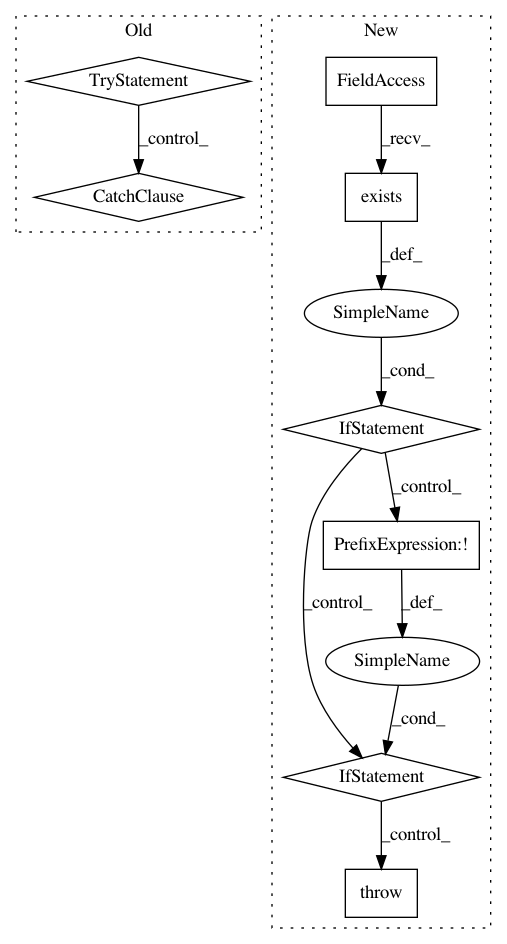

922554c5da52e88aa4a1564bc8f087c134b77fcc,openml/datasets/functions.py,,_create_dataset_cache_directory,#Any#,463
Before Change
Path of the created dataset cache directory.
dataset_cache_dir = os.path.join(config.get_cache_directory(), "datasets", str(dataset_id))
try:
os.makedirs(dataset_cache_dir)
except (OSError, IOError):
// TODO add debug information!
pass
return dataset_cache_dir
def _remove_dataset_cache_dir(did_cache_dir):
After Change
"datasets",
str(dataset_id),
)
if os.path.exists(dataset_cache_dir) and os.path.isdir(dataset_cache_dir):
pass
elif os.path.exists(dataset_cache_dir) and not os.path.isdir(dataset_cache_dir):
raise ValueError("Dataset cache dir exists but is not a directory!")
else:
os.makedirs(dataset_cache_dir)
return dataset_cache_dir
def _remove_dataset_cache_dir(did_cache_dir):
In pattern: SUPERPATTERN
Frequency: 3
Non-data size: 8
Instances
Project Name: openml/openml-python
Commit Name: 922554c5da52e88aa4a1564bc8f087c134b77fcc
Time: 2017-10-10
Author: feurerm@informatik.uni-freiburg.de
File Name: openml/datasets/functions.py
Class Name:
Method Name: _create_dataset_cache_directory
Project Name: autorope/donkeycar
Commit Name: e2b80e2afbd64a83fead539811f6b36599def9b4
Time: 2020-04-01
Author: tawnkramer@gmail.com
File Name: donkeycar/parts/dgym.py
Class Name: DonkeyGymEnv
Method Name: __init__
Project Name: openml/openml-python
Commit Name: 922554c5da52e88aa4a1564bc8f087c134b77fcc
Time: 2017-10-10
Author: feurerm@informatik.uni-freiburg.de
File Name: openml/tasks/functions.py
Class Name:
Method Name: _create_task_cache_directory